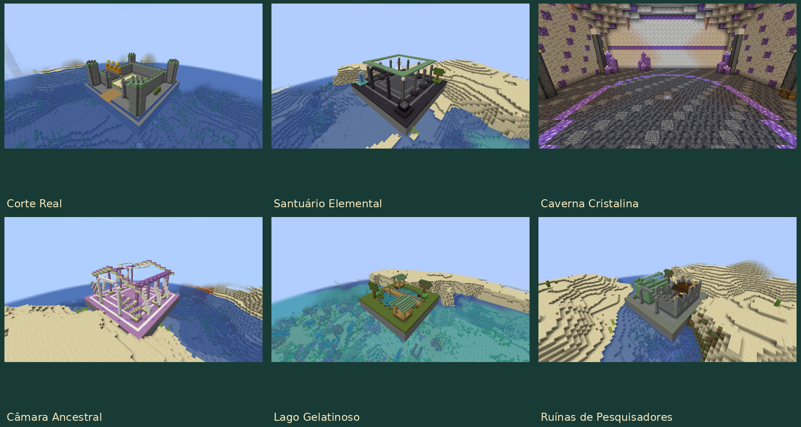

Estruturas e arenas naturais
Guia do mod · Bosses e rituais
Seis estruturas aparecem em chunks novos, quando a geração de estruturas está habilitada. Cada local tem arquitetura, materiais e iluminação próprios: passarelas, arcos, pilares, jardins, torres, galerias e detalhes SolarPunk.

As imagens mostram os templates colocados para conferência; a Caverna Cristalina aparece por dentro, pois sua geração natural é subterrânea.
Estrutura / ID após slimeevolution: |
Ambiente permitido | Arquitetura e conteúdo |
|---|---|---|
royal_court |
Planícies, Planícies de Girassóis ou Pântano | Corte de 39×23×39, torres, ameias, bandeiras verdes, brasão de coroa e fosso. Altar do Rei Gelatinoso. |
elemental_sanctuary |
Planícies, Deserto ou Savana | Santuário de 39×23×39, colunatas e quatro jardins elementais. Altar do Coração Magmático. |
crystal_cavern |
Picos Rochosos, Cavernas de Espeleotemas, Planícies ou Floresta | Caverna de 35×24×35, arcos de calcita, cúpula e aglomerados de ametista. Altar do Colosso Cristalino. |
ancestral_chamber |
Terras Altas ou Médias do End | Câmara de 39×25×39, contrafortes, abóbadas, auréola e vidro. Altar do Slime Primordial. |
gelatinous_lake |
Pântano, Manguezal ou Planícies | Lago de 29×16×29, margens orgânicas, passarelas, árvores e dois pavilhões de cobre. |
researcher_ruins |
Planícies, Floresta ou Taiga | Ruínas de 31×20×31, biblioteca de dois andares, mezanino, laboratório e estufa de cobre tomada pela vegetação. |
Invocar no altar
As quatro arenas têm um pedestal central gravado e 17×17 blocos de piso, com seis blocos livres acima. Use o item correspondente sobre o altar:
| Arena | Item | Boss |
|---|---|---|
| Corte Real | Coroa Gelatinosa | Rei Gelatinoso |
| Santuário Elemental | Braseiro Magmático | Coração Magmático |
| Caverna Cristalina | Sigilo Cristalino | Colosso Cristalino |
| Câmara Ancestral | Selo Primordial | Slime Primordial |
A estrutura nasce sem boss. A invocação aceita consome um item em Sobrevivência. Durante o encontro, o altar fica ocupado; outro uso não consome o item. Após a morte do boss, o mesmo altar pode ser usado novamente. Sair da região, descarregar chunks ou reiniciar o servidor conserva o encontro reservado. Os itens de ritual agora exigem o altar: um piso comum não inicia uma luta.
Proteção das arenas
As quatro arenas permanecem protegidas antes, durante e depois da luta, inclusive em Criativo. A proteção cobre a construção, suas fundações e uma margem externa. Impede quebrar ou colocar blocos, derramar ou retirar líquidos, destruir com explosões e mover blocos com pistões. Também barra alterações indiretas por fogo, dispensadores, fluidos, blocos em queda e criaturas.
O altar, os baús e a coleta de recompensas continuam acessíveis. Explosões e golpes ainda podem atingir entidades: a proteção preserva a arena. Ela fica salva no mundo e não depende de manter a geração de estruturas ativada. O lago e as ruínas de pesquisadores são locais de exploração sem essa proteção.
Exploração e frequência
Cada estrutura tem um único baú de loot finito. Abrir, esvaziar ou recarregar não reabastece. A Câmara Ancestral fornece uma Tabuleta Antiga, necessária ao Selo Primordial. Nenhum baú fornece automaticamente a descoberta na Slimepedia.
As cavernas ficam abaixo da superfície, sem túnel escavado até a entrada. Os locais superficiais rejeitam mares baixos, terreno muito inclinado e ilhas sem altura suficiente. Não há retro-geração: áreas já exploradas mantêm seus templates antigos; procure terreno novo para encontrar os altares.
Os conjuntos usam random_spread, espaçamento 32 e separação 12 chunks;
a câmara usa 24 e oito. Bioma, altura, inclinação e raridade filtram esses
candidatos; a distância não garante encontrar uma estrutura em cada intervalo.
No servidor, structures.enabled, as seis opções individuais e structures.rarity
controlam novas gerações. Veja a configuração.
Com comandos habilitados, use /locate structure slimeevolution:royal_court
no Overworld ou /locate structure slimeevolution:ancestral_chamber no End.
Substitua o ID para procurar os outros locais. As tags has_<id> permitem
ampliar biomas por datapack.